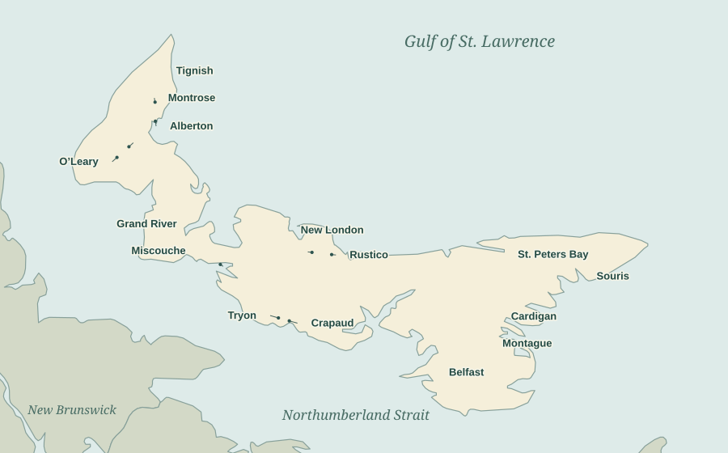
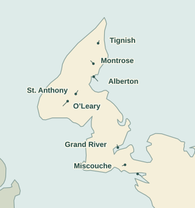
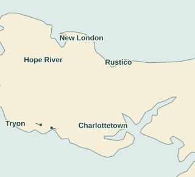
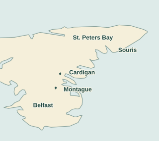

The Church in the Picture: A Postcard Map of Island Communities
A stone church above Souris, a tower over the trees at Belfast, a little church reflected across the Tryon River. Follow the postcards around Prince Edward Island and the buildings begin to tell a larger story: the communities that raised them, the lives gathered inside them, and the changes that made some of these views impossible to photograph again.
Churches across the Island
Choose a numbered dot to visit that community’s church postcards. Select any postcard in the album to open its full record, with front and back.

1Alberton2Belfast / Eldon3Cardigan4Charlottetown5Crapaud6Grand River7Hope River / St. Ann’s8Kensington9Malpeque10Miscouche11Montague12Montrose13Mount Stewart14New London / Springbrook15O’Leary16Rustico17Souris18St. Anthony / Woodstock19St. Peters Bay20Summerside21Tignish22Tryon23Vernon RiverWestern Island

1Alberton6Grand River8Kensington9Malpeque10Miscouche12Montrose15O’Leary18St. Anthony / Woodstock20Summerside21TignishCentral Island

4Charlottetown5Crapaud7Hope River / St. Ann’s14New London / Springbrook16Rustico22TryonEastern Island

2Belfast / Eldon3Cardigan11Montague13Mount Stewart17Souris19St. Peters Bay23Vernon River23 community stops · 62 postcard views. Dots mark approximate communities or church sites; nearby city churches share a stop. This is a map of the collection, not a complete inventory of Island churches.
Find a community · A–Z map key
- 01 · Alberton
- 02 · Belfast / Eldon
- 03 · Cardigan
- 04 · Charlottetown
- 05 · Crapaud
- 06 · Grand River
- 07 · Hope River / St. Ann’s
- 08 · Kensington
- 09 · Malpeque
- 10 · Miscouche
- 11 · Montague
- 12 · Montrose
- 13 · Mount Stewart
- 14 · New London / Springbrook
- 15 · O’Leary
- 16 · Rustico
- 17 · Souris
- 18 · St. Anthony / Woodstock
- 19 · St. Peters Bay
- 20 · Summerside
- 21 · Tignish
- 22 · Tryon
- 23 · Vernon River
The buildings that gathered a community
There is a particular kind of Island postcard in which the church seems to gather the whole landscape around it. At Belfast, gravestones stand in the foreground and the tower rises in stages above the trees. At Tryon, water fills the lower half of the view. At Souris, church and convent occupy the hillside together. These were buildings people could recognise at a distance, and buildings around which much of a community’s life took place.
The postcards do not show all of that life. Most show a quiet exterior, perhaps a few figures on the road. But turn one over and the doors open. A card mailed from Charlottetown in July 1914 tells a sister, “We were to Methodist church this morning. I think we will go to Baptist this evening.” The writer adds that there will be a baptism. The front is a pastoral view of sheep; the churchgoing happens in the message. It is a useful reminder that a postcard’s picture and its human story can be in different places.

Another visitor, writing from Charlottetown on August 2, 1903, had just come home from church and was enjoying the music. The picture chosen for the message was Fort Edward. Those casual remarks recover something that the grand architectural views cannot: a service fitted into a visit, music remembered afterwards, and news passed to someone elsewhere. For the sender, church was part of the day rather than a historical subject.
Brick, timber, stone—and the work behind them
Tignish’s St. Simon and St. Jude is an imposing place to begin. Built in 1859–60 to a design by Patrick Charles Keely, it used local materials and the labour of the community. The provincial heritage record credits young parishioners with helping supply the lime and sand for mortar and the enormous quantity of bricks. It also preserves Henry Jones Cundall’s July 1860 visit, when he climbed inside the nearly completed spire. The postcards inherit a view that had already impressed an early Island photographer decades before the postcard boom. St. Simon and St. Jude’s heritage record.
At St. Anthony’s, the work of building is recorded in unusually tangible terms. A parish picnic in 1872 raised $1,025.79 toward a new church. Construction began in 1873 and was completed in 1877; the heritage account says only $150 remained owing. The building’s tower then acquired a history of its own. Parishioners saved the church after lightning struck in 1890 by cutting away the burning part of the spire. Another strike in 1912 led to its replacement with the small dome seen in the later view. The tower on a postcard is therefore more than a decorative silhouette: its shape can preserve the result of a particular ordeal. The record for St. Anthony’s.
Belfast offers a different kind of continuity. The present St. John’s Presbyterian Church was built in 1824, in a congregation established by the Selkirk settlers. Robert Jones, a shipjoiner and lumber surveyor, designed its distinctive staged tower. The spire came later, in the 1860s. Services continued in both Gaelic and English into the twentieth century. The monument erected in 1903 to commemorate the settlers added another layer to a churchyard already full of family remembrance. Different publishers called the place Belfast, Eldon or Mount Eldon; the recognisable tower brings those postcards back together. St. John’s at Belfast.
The material changes as we travel. St. Mary’s at Souris is built largely of Island sandstone, quarried nearby at Chepstow. William Critchlow Harris designed the larger church commissioned in 1901 and completed in 1902. In the broad postcard, its size is made clear by the small figures and the open hillside. Acorn’s closer winter view gives the stone building a very different setting. The tall wooden spire in these photographs was lost when fire destroyed the interior in the late 1920s. John Marshall Hunter rebuilt within the surviving stone walls; a copper cap replaced the earlier spire. The cards preserve the outline that visitors no longer see. St. Mary’s heritage record.
Harris also designed the Methodist church built at Tryon in 1881, now Tryon United. Here the Gothic forms are expressed in wood, with a steep roof, low walls and a tower set beside the main body. The river view makes the building seem almost inseparable from its setting. Parks Canada’s designation recognises the church as an exceptional example of the Gothic Revival. The caption calls it simply “The Old Church at Tryon,” as though the reader would need no further introduction. The Tryon designation.
A church could be a whole neighbourhood
The Rustico card puts St. Augustine’s beside the Farmers’ Bank. Begun in 1838, the church was built with local materials by Acadian craftsmen and served for a time as the diocese’s pro-cathedral. Father Georges-Antoine Belcourt’s years there connect it with the bank founded in 1864. The photograph holds worship and a practical community institution in the same frame. It is hard to ask for a more direct illustration of how the parish extended beyond the church door. St. Augustine’s history.
At Miscouche, the twin-towered St. John the Baptist was completed and dedicated in December 1892. George E. Baker designed the building; Schurman and Clark of Summerside were its contractors. The heritage record places that ambitious church within the renewed Acadian cultural confidence following the 1884 convention at Miscouche, where the Acadian flag was adopted. The convention preceded this building: the postcard should not silently become a photograph of the church standing there in 1884. The Miscouche church record.
The convent postcards add another dimension. Their titles distinguish the convent from the church, and sometimes give the chapel an image of its own. At Tignish, the Notre Dame convent opened in 1868 as a school for girls run by the Congregation of Notre Dame. Its presence beside the church helps explain why these places recur in the visual record: religious buildings were also places of education and daily work. The Souris panorama gives church and convent equal room in the landscape, rather than reducing the latter to a footnote. The Tignish convent’s history.
There are smaller connections to notice as well. Mount Stewart’s card explicitly includes the manse. Grand River’s includes the parochial house. Charlottetown’s Trinity view names Heartz Memorial Hall as well as the church. The postcards themselves invite us to look at the group of buildings and the relationships between them.
What fire changed, and what postcards kept
St. Dunstan’s gives the collection its most dramatic sequence. Bayer’s view shows the cathedral and the bishop’s residence before the disaster. Walter Stiff’s night photograph shows the fire of March 8, 1913. The later interior reveals the rebuilding: surviving walls were retained, the exterior followed François-Xavier Berlinguet’s earlier plan, and J. M. Hunter redesigned the inside. The cathedral received the additional title of basilica in 1929. “Cathedral” and “basilica” are therefore not names for two successive buildings; St. Dunstan’s is both. Parks Canada’s account.
On the back of the later interior, someone wrote, “Our Church is a Basilica now.” The possessive matters. This was not merely an architectural attraction to its writer. It was our church, with news worth sharing. The fuller story of the fire and Walter Stiff’s photographs follows the destruction and recovery through more cards.
Summerside supplies another before-and-after. One card explicitly commemorates the Episcopal church destroyed on October 10, 1906. Other views show St. Mary’s brick replacement, built in 1908 to George E. Baker’s design. Put them together and a broad statement about a town fire becomes a change in a familiar place: a congregation had to replace the building in which it had gathered. The Methodist church that became Trinity United survived that fire, so the church postcards should not all be swept into the same account of destruction. St. Mary’s rebuilding · Trinity’s history.
At Hope River, the imposing St. Ann’s church on the postcard was lost for a different reason. The parish’s illustrated history describes persistent structural problems with the cement-block building erected in 1911. After years of attempted repairs, it was replaced; the successor was first used at Christmas 1954. That account is a useful counterweight to the impressive postcard. A building can look splendid in a photograph while placing a long burden on the people responsible for keeping it standing. St. Ann’s parish history.
Inside the picture
Not every church postcard looks outward. The interior of All Souls’ Chapel at St. Peter’s Cathedral takes us into a much smaller space than St. Dunstan’s, with a very different atmosphere. William Critchlow Harris designed the chapel in 1888; his brother Robert supplied its mural paintings. The arch, carved screen and paintings reward the kind of close attention usually given to a distant sign in a street scene. The All Souls’ Chapel designation.
Trinity’s organ and rows of seats suggest another way to read an interior. It is easy to admire the arrangement and forget that these were places meant to be occupied and heard. The visitor writing home about church music brings some of that sound back. The message about a baptism gives the quiet exterior a reason for people to be arriving.
The denominational names deserve attention too. “Episcopal” appears on cards of Anglican churches. “Methodist” and “United” can describe different periods in the life of the same congregation, while Presbyterian congregations did not all make the same choice at Church Union in 1925. At Malpeque, for example, the Princetown church became United, while continuing Presbyterians eventually built the Keir Memorial church. A change in a caption cannot automatically be treated as a change in the building—or as proof that every congregation followed the same path. The archival account of Princetown and Church Union.
This album follows the postcards that survive in the collection. It cannot stand for every Island congregation, every religious tradition, or everyone’s experience of church life. What it can do is put named buildings back into their communities, allow different views to speak to one another, and occasionally let a writer on the back interrupt the architectural tour. “Do you recognize this building?” asks the son who sent the Malpeque card to his father in 1912. A century later, that remains a good place to begin.
The church postcards, A–Z
One representative copy is shown where the same view occurs in several prints. Wider streetscapes, interiors and neighbouring convents are included where they add something different.
01 · Alberton
Four denominational captions make Alberton a small church atlas of its own. The Presbyterian view occurs twice in the collection; one copy is shown here. The postcards also show Sacred Heart, St. Peter’s Anglican and the United church.
 Presbyterian Church
Presbyterian Church St. Peter’s Anglican Church
St. Peter’s Anglican Church Church of the Sacred Heart
Church of the Sacred Heart United Church
United Church Church Street: the church within the townscape
Church Street: the church within the townscape02 · Belfast / Eldon
The labels Belfast, Eldon and Mount Eldon lead to the same St. John’s Presbyterian Church. These two different views show its distinctive staged tower and the burial ground around it.
 Belfast Church near Eldon
Belfast Church near Eldon Belfast’s historical church, captioned Mount Eldon
Belfast’s historical church, captioned Mount Eldon03 · Cardigan
St. Andrew’s Church carries an unusually useful credit: “Photo by Rev. E. Smith.” The photographer’s church and waterfront cards are explored in The View from the Minister’s Window.
 St. Andrew’s Church, photographed by Rev. E. Smith
St. Andrew’s Church, photographed by Rev. E. Smith04 · Charlottetown
One city dot opens several churches, rather than trying to stack their markers on top of one another. The selection moves from the streets into chapels and sanctuaries. St. Dunstan’s appears before the fire, during it, and with its rebuilt interior; the two Zion views also show markedly different buildings.
 St. Dunstan’s and the bishop’s residence before the 1913 firePostcard 3908 · Open record
St. Dunstan’s and the bishop’s residence before the 1913 firePostcard 3908 · Open record St. Dunstan’s burning, March 8, 1913; Stiff PhotoPostcard 4012 · Open record
St. Dunstan’s burning, March 8, 1913; Stiff PhotoPostcard 4012 · Open record St. Dunstan’s rebuilt interiorPostcard 2166 · Open record
St. Dunstan’s rebuilt interiorPostcard 2166 · Open record St. James Presbyterian Church, the KirkPostcard 3871 · Open record
St. James Presbyterian Church, the KirkPostcard 3871 · Open record The Kirk in a Pownal Street view, labelled by the senderPostcard 3873 · Open record
The Kirk in a Pownal Street view, labelled by the senderPostcard 3873 · Open record St. Paul’s Anglican ChurchPostcard 0597 · Open record
St. Paul’s Anglican ChurchPostcard 0597 · Open record St. Peter’s Cathedral and adjoining chapelPostcard 3914 · Open record
St. Peter’s Cathedral and adjoining chapelPostcard 3914 · Open record Inside All Souls’ ChapelPostcard 2987 · Open record
Inside All Souls’ ChapelPostcard 2987 · Open record An earlier Zion Presbyterian Church viewPostcard 1743 · Open record
An earlier Zion Presbyterian Church viewPostcard 1743 · Open record Christmas greetings, 1914, with the new Zion ChurchPostcard 0387 · Open record
Christmas greetings, 1914, with the new Zion ChurchPostcard 0387 · Open record Trinity United Church and Heartz Memorial HallPostcard 3484 · Open record
Trinity United Church and Heartz Memorial HallPostcard 3484 · Open record Trinity’s interior: organ, seating and sanctuaryPostcard 0367 · Open record
Trinity’s interior: organ, seating and sanctuaryPostcard 0367 · Open record Baptist ChurchPostcard 0393 · Open record
Baptist ChurchPostcard 0393 · Open record Central Christian ChurchPostcard 4067 · Open record
Central Christian ChurchPostcard 4067 · Open record Holy Redeemer ChurchPostcard 1662 · Open record
Holy Redeemer ChurchPostcard 1662 · Open record Notre Dame Convent and its chapelPostcard 0216 · Open record
Notre Dame Convent and its chapelPostcard 0216 · Open record
05 · Crapaud
The printed “Crepaud” on the Anglican card is a spelling variant of Crapaud. Its spire and the United church’s corner tower give this pair quite different outlines.
 St. John’s Anglican Church, captioned Episcopal Church
St. John’s Anglican Church, captioned Episcopal Church United Church, Crapaud
United Church, Crapaud06 · Grand River
The church and parochial house share this view of Grand River in Prince County. The fence ties the two buildings together as one church property; the small figures help convey their scale.
 Roman Catholic church and parochial house
Roman Catholic church and parochial house07 · Hope River / St. Ann’s
This is the imposing 1911 St. Ann’s church, a very different building from its successor. The parish history explains the construction problems behind its eventual replacement. The card is labelled Hope River, the historical parish name.
 Hope River Church: St. Ann’s 1911 building
Hope River Church: St. Ann’s 1911 building08 · Kensington
Two postcards, two congregations. Holy Family’s long body and tower contrast with the more compact Presbyterian church. Their printed titles supply the identifications used here.
 Church of the Holy Family
Church of the Holy Family Presbyterian Church
Presbyterian Church09 · Malpeque
The writer of this 1912 card asks, “Do you recognize this building?” That makes the little church view a shared memory as well as a souvenir. The postcard’s own caption is retained here.
 “Historical Malpeque Church”
“Historical Malpeque Church”10 · Miscouche
St. John the Baptist’s twin towers belong to the church dedicated in 1892. The separate convent card broadens the view from a place of worship to the neighbouring world of religious education.
 St. John the Baptist, captioned R.C. Church
St. John the Baptist, captioned R.C. Church Notre Dame Convent
Notre Dame Convent11 · Montague
The trees frame St. Mary’s in this quiet real photo postcard. After the town’s wharves and railway scenes, it offers another way into the same community.
 St. Mary’s Church, Montague
St. Mary’s Church, Montague12 · Montrose
The central square tower and broad, low wings make Montrose’s United church especially easy to distinguish from the tall-spired buildings elsewhere in the album.
 United Church, Montrose
United Church, Montrose13 · Mount Stewart
The title deliberately includes both St. John’s United Church and the manse. The minister’s home is part of the picture, immediately beside the building in which the congregation gathered.
 St. John’s United Church and manse
St. John’s United Church and manse14 · New London / Springbrook
The card says New London; the Geddie Memorial Church stands at Springbrook. Its freestanding bell tower, added in 1905, is the striking detail beside the low church and cemetery. The postcard spells the name “Gedde.” The heritage record supplies the modern identification and the tower’s history.
 Geddie Memorial Church and separate bell tower
Geddie Memorial Church and separate bell tower15 · O’Leary
St. Luke’s and the Presbyterian church belong to O’Leary’s album. St. Anthony’s has its own map stop northeast of the town, even though O’Leary appears in the caption of that card.
 St. Luke’s Episcopal Church
St. Luke’s Episcopal Church Presbyterian Church, O’Leary
Presbyterian Church, O’Leary16 · Rustico
St. Augustine’s and the Farmers’ Bank occupy the same photograph. The card’s short title, “Rustico Chapel,” understates the significance of the wooden church at the left.
 St. Augustine’s Church and the Farmers’ Bank
St. Augustine’s Church and the Farmers’ Bank17 · Souris
The wide view is especially revealing: church and convent stand apart on the slope, with paths, fences and open ground between them. The closer church photographs show the tall spire lost in the later fire. Acorn’s winter view supplies a different season; the convent has its own portrait.
 St. Mary’s Church and convent across the hillside
St. Mary’s Church and convent across the hillside St. Mary’s in winter, credited to Photo Acorn
St. Mary’s in winter, credited to Photo Acorn St. Mary’s with its earlier tall spire
St. Mary’s with its earlier tall spire Souris convent
Souris convent18 · St. Anthony / Woodstock
The closer view shows St. Anthony’s after the tall spire had been replaced by a small cap. The second postcard pulls back to include the trees, fences and surrounding ground. This is the church at Howlan Road and the Western Road, associated with Bloomfield and Woodstock.
 St. Anthony’s Church, photographed by B. H. Turner
St. Anthony’s Church, photographed by B. H. Turner St. Anthony in its rural setting
St. Anthony in its rural setting19 · St. Peters Bay
A road curves toward the church in this broad landscape. The card is titled simply “Church at St. Peters.” It is presented under that wording without assigning a date to the photograph or a building phase from its distant tower alone.
 Church at St. Peters, seen across the fields
Church at St. Peters, seen across the fields20 · Summerside
The church views reward comparison. St. Mary’s brick replacement stands apart from the commemorative card of its predecessor, explicitly marked as destroyed on October 10, 1906. The Methodist, Catholic, Baptist, Christian and Presbyterian views show the variety within a single town.
 The earlier Episcopal church, recorded as destroyed in the 1906 firePostcard 4520 · Open record
The earlier Episcopal church, recorded as destroyed in the 1906 firePostcard 4520 · Open record St. Mary’s Episcopal Church, the brick replacementPostcard 2806 · Open record
St. Mary’s Episcopal Church, the brick replacementPostcard 2806 · Open record St. Paul’s Roman Catholic ChurchPostcard 4231 · Open record
St. Paul’s Roman Catholic ChurchPostcard 4231 · Open record Methodist Church, later Trinity UnitedPostcard 2758 · Open record
Methodist Church, later Trinity UnitedPostcard 2758 · Open record Another Methodist church view: a closer anglePostcard 3474 · Open record
Another Methodist church view: a closer anglePostcard 3474 · Open record Baptist ChurchPostcard 2810 · Open record
Baptist ChurchPostcard 2810 · Open record Christian ChurchPostcard 3354 · Open record
Christian ChurchPostcard 3354 · Open record Presbyterian ChurchPostcard 4344 · Open record
Presbyterian ChurchPostcard 4344 · Open record Church Street: churches among homesPostcard 4337 · Open record
Church Street: churches among homesPostcard 4337 · Open record
21 · Tignish
The tall brick church of St. Simon and St. Jude is the centrepiece. The Chapel Street view and Notre Dame convent add the surrounding streets and institutions, so the church is seen as part of a community rather than an isolated monument.
 St. Simon and St. Jude Church
St. Simon and St. Jude Church A second view of St. Simon and St. Jude
A second view of St. Simon and St. Jude Chapel Street, Tignish
Chapel Street, Tignish Notre Dame Convent
Notre Dame Convent22 · Tryon
“The Old Church at Tryon” is the picturesque 1881 Methodist church, later Tryon United. Its place is here on the south shore, by the Tryon River—not at Cape Tryon on the north shore.
 Tryon’s church across the water
Tryon’s church across the water23 · Vernon River
St. Joachim’s gives the southeastern part of the map a substantial brick church. The parish records construction beginning in 1877 and consecration two years later. The parish history traces its earlier buildings as well.
 St. Joachim’s Church, captioned Vernon River Bridge
St. Joachim’s Church, captioned Vernon River BridgeAbout the map and historical identifications
The album follows printed postcard captions, visible architectural details and the parish, archive and heritage records linked in the story. A postal cancellation dates the use of a card, not necessarily the photograph. Buildings and congregations can have different histories, and a new denominational name does not by itself prove a rebuilding.
The Souris sources disagree about whether the fire was in 1928 or 1929: the Public Archives description gives 1928, while the heritage register gives 1929. The narrative therefore uses “the late 1920s.” The St. Peters view retains its general printed title without a more specific architectural dating.
The map uses the same Natural Earth coastline as the lighthouse article. Positions are approximate; they are intended for exploring the postcard album. Modern parish locations and place-name records help distinguish St. Anthony’s from O’Leary, Springbrook from New London village, and Tryon from Cape Tryon.